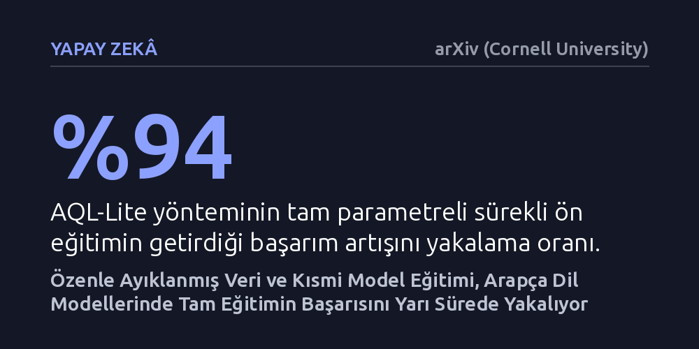

YAPAY-ZEKA · arXiv (Cornell University) · 2026-10-25
Çok dilli yapay zekâ modellerini Modern Standart Arapçaya uyarlamak için yüksek kaliteli veri filtreleme ve kısmi model eğitimini birleştiren yeni bir yöntem sınandı. Geliştirilen yaklaşım, tam model eğitiminin sağladığı kazanımın yüzde 94'ünü neredeyse yarı sürede elde etti.
Büyük dil modellerini yeni bir dile uyarlamak için tüm modeli devasa bütçelerle eğitmek yerine, titiz veri ayıklama ve hedefli katman eğitimiyle maliyeti ve süreyi yarıya indirmenin mümkün olduğunu gösterir.

Büyük dil modellerinin çoğu başlangıçta ağırlıklı olarak İngilizce verilerle eğitilir. Bu çok dilli modelleri sonradan belirli bir dilde yetkin kılmak için 'sürekli ön eğitim' adı verilen ek bir eğitim sürecinden geçirmek gerekir. Ancak yüz milyarlarca parametreye sahip bu devasa ağları baştan sona eğitmek, haftalar süren süper bilgisayar zamanı ve çok yüksek hesaplama maliyetleri doğurur.
Arapça söz konusu olduğunda sorun yalnızca hesaplama bütçesiyle de sınırlı kalmaz; veri niteliği de ciddi bir engele dönüşür. İnternetten taranan ham Arapça metinler, geniş bir coğrafyaya yayılan çok sayıda yerel lehçeyi, yazım hatalarını ve anlamsız gürültüleri barındırır. Bu durum, modellerin hem ortak yazı ve medya dili olan Modern Standart Arapçayı doğru öğrenmesini zorlaştırır hem de filtrelenmemiş verilerle yapılan ek eğitimlerin modele neredeyse hiçbir fayda sağlamamasına neden olur.
Araştırmacılar bu iki engeli aşmak için AQL-Lite adını verdikleri iki ayaklı bir çerçeve geliştirdi. İlk aşamada internetten derlenen metinler titiz bir ayıklama sürecinden geçirildi. Yapısal temizlik, kural ve yapay zekâ tabanlı filtreler, yerel lehçeleri ayıklayıp Modern Standart Arapçayı seçen algoritmalar ve yinelenen içerikleri silen tekilleştirme adımlarıyla gürültüden arındırılmış yüksek kaliteli bir veri kümesi oluşturuldu.
İkinci aşamada ise tüm modeli baştan aşağı eğitmek yerine yalnızca kritik bileşenleri güncelleyen bir mimari tercih edildi. Modelin ana ağırlıkları dondurularak ağ geneline hafif bağdaştırıcılar (RS-LoRA) yerleştirildi; bunun yanında dilin kelime haznesini tutan gömme matrisi ile modelin son sekiz dönüştürücü bloğu katman bazlı öğrenme hızlarıyla eğitildi. Böylece modelin genel yetenekleri korunurken yeni dile odaklanması sağlandı.
Yapılan kontrollü deneyler, veri ayıklamanın ve kısmi eğitimin etkisini açık biçimde ortaya koydu. 1 milyar belirteçlik eşit bir bütçeyle yapılan denemede, filtrelenmemiş ham internet verisiyle eğitilen model temel modele kıyasla hiçbir başarım artışı gösteremezken; ayıklanmış verilerle eğitilen model dört farklı Arapça test ortalamasında 3,51 puanlık net bir artış yakaladı.
5 milyar belirteçlik karşılaştırmada ise AQL-Lite yöntemi, modelin tüm parametrelerinin eğitildiği tam ön eğitimin getirdiği başarım artışının yüzde 94'ünü elde etti (73,58 puana karşı 73,19 puan). Üstelik bu sonuca tam eğitimin harcadığı sürenin yalnızca yüzde 52'sinde ulaşıldı. Bileşen analizleri; bağdaştırıcıların, serbest bırakılan son blokların ve kelime matrisi eğitiminin her birinin bu kazanımda pay sahibi olduğunu doğruladı.
Yöntem 40 milyar belirteçlik Modern Standart Arapça verisiyle ölçeklenip 1 milyon talimat örneğiyle pekiştirildiğinde, ortaya çıkan 12 milyar parametreli model Açık Arapça Dil Modeli Liderlik Tablosu'nda (OALL v2) 75,3 puanlık bir skora ulaştı.
Bu çalışma, yapay zekâ modellerini belirli bir dile uyarlarken körü körüne devasa veri yığınlarına ve dev bütçeli işlem güçlerine bel bağlamak gerekmediğini gösteriyor. İyi filtrelenmiş rafine bir veri kümesi ve doğru seçilmiş model katmanları, hesaplama maliyetini yarıya indirirken tam eğitimin başarısını neredeyse birebir yakalayabiliyor.
Elde edilen sonuçlar, özellikle süper bilgisayar altyapılarına erişimi kısıtlı olan bağımsız araştırmacılar ve yerel kurumlar için erişilebilir bir yöntem sunuyor. Kısmi parametre güncellemesi ve veri odaklı ayıklama yaklaşımı, sadece Arapça için değil, yüksek kaliteli dijital verisi sınırlı olan diğer diller için de verimli model geliştirmenin kapısını aralayabilir.